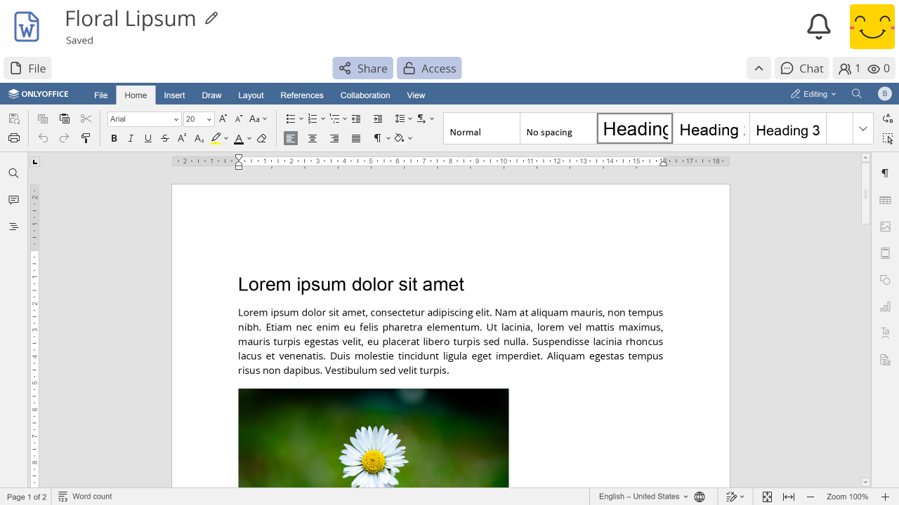
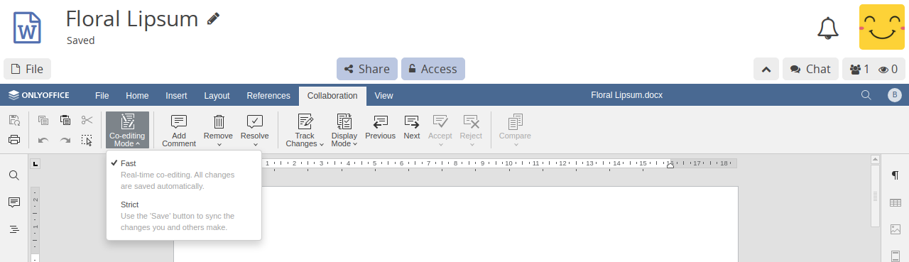
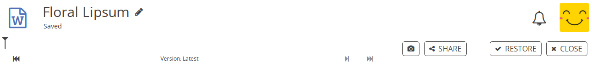

Документ#
Приложение Документ в CryptPad является интеграцией OnlyOffice. Чтобы узнать больше о деталях этой интеграции, см. Какова связь между CryptPad и OnlyOffice?

Документация#
Пожалуйста, обратитесь к Документации OnlyOffice для получения руководства пользователя по работе с приложением Документ.
Примечание
Из-за различных проблем с безопасностью, плагины OnlyOffice, а также макросы <https://api.onlyoffice.com/plugin/macros> __, недоступны на CryptPad.
Панели инструментов#
CryptPad интегрирует Документы OnlyOffice в ту же зашифрованную систему совместной работы, что и другие приложения. Кроме того, OnlyOffice предоставляет широкий спектр функций на панели инструментов с вкладками. В результате получается двойная панель инструментов, которая может вызвать путаницу:
Самая верхняя панель инструментов CryptPad используется для операций с файлом - Файл (включая импорт/экспорт, историю, свойства и т. д.), а также Поделиться и Доступ.
Панель инструментов OnlyOffice используется для всей функциональности в самом документе, а также для режимов совместной работы, описанных в следующем разделе.
Режимы отмены правок и совместной работы#

OnlyOffice предоставляет два режима совместного редактирования документов, которые влияют на то, как изменения синхронизируются между пользователями и доступна ли функция Отменить.
Быстрый режим включен по умолчанию. Новые правки всех пользователей автоматически синхронизируются с другими по мере их внесения. В этом режиме отменить его невозможно.
Строгий режим позволяет каждому пользователю вносить изменения независимо. Измененные ячейки 'блокируются' для других до тех пор, пока автор вручную не сохранит их изменения. Новые изменения синхронизируются с другими пользователями только после сохранения. В этом режиме можно отменить изменения, которые еще не были сохранены. Когда пользователь сохраняет свои изменения, другим пользователям предлагается сохранить их, чтобы получить последние изменения.
Когда для отмены правки нажимается Ctrl + Z, приложение автоматически предлагает переключиться в Строгий режим, чтобы активировать функцию отмены.
Чтобы вернуться в Быстрый режим, используйте вкладку Совместная работа на панели инструментов OnlyOffice и выберите Режим совместного редактирования > Быстрый.
Примечание
CryptPad запоминает выбранный вами режим редактирования на каждом устройстве для всех документов.
История#
Чтобы получить доступ к истории документа, используйте Файл> История на панели инструментов CryptPad.
Из-за интеграции OnlyOffice с зашифрованной совместной работой в режиме реального времени CryptPad, история в документах работает иначе, чем в других приложениях.

Панель инструментов истории документов#
История в документах позволяет только вернуться к предыдущей версии, а затем продвигаться вперед по отдельным правкам.
предыдущая версия
шаг вперед на одну правку
следующая версия
Функции восстановления версии и общего доступа к версии, а также всё, что относится к Снимки, работает так же, как в других приложениях.
Печать#
Для печати документов рекомендуется сперва экспортировать документы с использованием одного из приведенных ниже форматов, а верстку страниц обрабатывать с помощью настольного приложения, такого как LibreOffice Writer.
В качестве альтернативы можно использовать экспорт в .pdf для создания файла для печати, результаты могут различаться в зависимости от макета документа.
Импорт/Экспорт#
.bin, экспортируемые этим приложением, Word .docx, .odt..bin, Word .docx, .odt, .pdf.